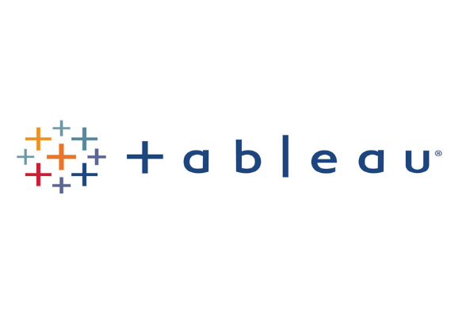
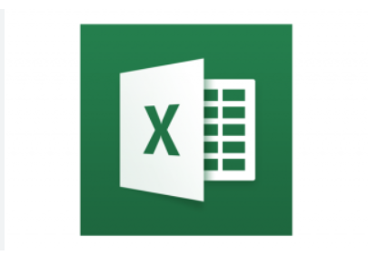

Since June 2023 I have been a Program Manager at Granite Bay Care, where I supervise and train more than 10 staff in an environment governed by state and federal regulations. I run routine audits of documentation, payroll records and financial transactions, and I manage schedules, budgets and day-to-day operations.
Before that I worked as a Quality Assurance Lab Technician at Stonyfield, a GMP food-manufacturing lab, and as an IT Technician Intern at Southern Maine Community College. I hold an A.S. in Information Technology from SMCC and am completing a B.S. in Information Technology at Northeastern University (expected 2028). I also earned a Supply Chain Coordinator certificate from CourseCareers.
I bring careful documentation habits, respect for procedures, and the data skills to measure and improve how things run. U.S. citizen, available for any shift.
As a Quality Assurance Lab Technician at Stonyfield (Nov 2020 – Oct 2021), I worked under GMP and food-safety requirements in a production quality lab. In my current Program Manager role I apply the same discipline to documentation and compliance in a regulated setting.
GMPEnvironmental MonitoringAseptic TechniqueSample TestingCalibrationGood Documentation PracticeCompliance AuditsSOP Adherence
Used SQL Server to clean the Nashville housing dataset: standardized dates, filled missing addresses, split addresses into street, city and state, standardized Yes/No fields and removed duplicates so the data was ready for analysis.
Explored COVID-19 death and vaccination data in SQL Server using joins, window functions, CTEs, temp tables and views, plus exploratory analysis of U.S. household income and world life expectancy data.

Interactive Tableau dashboards on Airbnb listings, Netflix titles and FIFA World Cup results.

Power BI reports including an Amazon Prime catalog dashboard and a data-professional survey analysis, plus drill-down and conditional-formatting builds.

Excel workbooks covering data cleaning (Nashville housing data), pivot tables, XLOOKUP, formulas and charts built on COVID-19 and project datasets.
Jupyter notebooks for data cleaning, exploratory analysis, group-by aggregation and visualization in Pandas, including crime-rate and suicide-rate datasets.